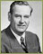
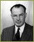
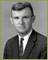
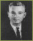
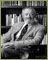
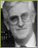
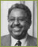
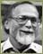
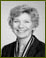

UCSF CHANCELLORS

John Bertrand deCusance Morant Saunders was born in Grahamstown, South Africa, on July 2, 1903.

Willard Fleming was born in Sausalito, California on October 11, 1899. He entered the UC College of Dentistry in the wartime year of 1918.

Philip Randolph Lee was born in California, the third son of Dr. Russel Van Arsdale Lee, founder of the renowned Palo Alto Clinic.

Francis A. Sooy was born in Coalinga, California on July 1, 1915. He received his received his M.D. degree from the University of California School of Medicine in 1941.

Julius R. Krevans was born on May 1, 1924, in New York. He received his A.B. degree from New York University in 1944, and his M.D. degree from NYU School of Medicine in 1946.

Joseph Boyd Martin was born in Bassano, Alberta, Canada in 1938. He received both his B.A. and M.D. degrees from the University of Alberta, Edmonton.

Haile Debas was born in Asmara, Eritrea, in 1937. He received his M.D. from McGill University in 1963, and completed his surgical training at the University of British Columbia.
J. Michael Bishop was born February 22, 1936, in York, Pennsylvania. He completed his undergraduate degree at Gettysburg College, majoring in chemistry.
Susan Desmond-Hellmann, MD, MPH, is the chancellor of the University of California, San Francisco. She assumed the post August 3, 2009.{% include footer.html %}